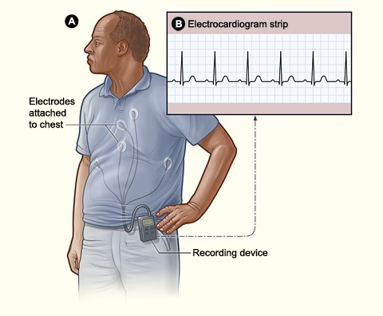
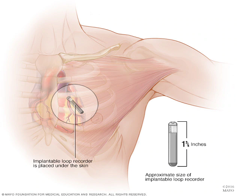

SYN
COPE
2018 ESC Guidelines for the diagnosis and management of syncope
CONCEPT
to document • to
provoke
-
ABPM (ambulatory BP monitoring)to detect nocturnal hypertension.to detect and monitor OH in daily life.
-
Holter Monitorconsidered in frequent syncope or presyncope (≥1/wk).
-
Loop RecorderExternal recorder: for those with once-in-4wks episode.ILR (implantable loop recorder) : indicated in recurrent syncope or syncope with high-risk criteria after unrevealing evaluation.
-
Video Recordingconsidered home video recordings of spontaneous events.
-
Autonomic Function Testconsider Valsalva maneuver or Deep-breathing test if neurogenic OH is suspected.
-
Carotid Sinus Massageindicated in patients>40 years of age with syncope of unknown origin compatible with a reflex mechanism.
-
EP Studyold MI + unexplained syncope + not yet indicated for ICD.bifascicular block + unexplained syncope
-
Exercise Testingsyncope during or shortly after exertion.
-
Tilt Testingsuspected; but not confirmed by initial evaluation, of reflex syncope.assessment of delayed OH, POTS vs psychogenic syncope.
Carotid Sinus Massage

BP / ECG Monitor

Max Pulse

Use 3 fingers

Massage Up/Dn

Supine & Upright

10s each
| I | CSM is indicated in patients >40 years of age with syncope of unknown origin compatible with a reflex mechanism. |
| I | Carotid Sinus Syncope (CSS) = CSM with bradycardia and/or hypotension + reproducible symptoms |
| OK |
No contraindications. Careful in those with prior stroke/TIA, or known carotid stenosis. |

Electrophysiologic Study
EP Study for Suspected Bradycardia
Bifascicular Block | Sinus Node Dysfunction
Bifascicular Block | Sinus Node Dysfunction

| IIa | EPS should be considered in a patient with bifascicular block with unexplained syncope. |
| I | +EPS = HV ≥70ms or high-grade AV block during incremental A pacing = pacemaker |

- Retrospective data (n=43)
- 0 recurrent syncope in EPS-guided therapy group.
- 29% recurrent syncope in empiric pacemaker group.
- 27% in empiric group progressed to high degree AV block
- Empiric pacemaker in BFB + unexplained syncope remains a IIa recommendation in 2017 ACC guidelines

| IIb | In asymptomatic sinus bradycardia, EPS may be considered in a few instances when non-invasive tests have failed to show a correlation between syncope and bradycardia. |
EP Study for suspected tachycardia


50M, old inferior wall MI, LVEF 50%, with syncope. EP study induced monomorphic VT.
| I | EPS is indicated unexplained syncope + previous MI or other scar related conditions. |
EP Study for syncope with various cardiac conditions
ref: 2017 ACC guidelines for SCA
ref: 2017 ACC guidelines for SCA
| IIa | Ischemic CM, non-ischemic CM, or congenital heart disease who do not meet ICD indications for primary prevention. |
| IIb | Limited value in Brugada syndrome or ARVC. |
| III | No benefit in long QT syndrome, short QT syndrome, CPVT, HCM, or early repolarization syndrome. |
60°-70°
Tilt Testing

Tilt testing should now be considered a means of exposing a hypotensive tendency rather than being diagnostic of vasovagal syncope.
| IIa | Considered in patients with SUSPECTED reflex syncope, orthostatic hypotension, postural orthostatic tachycardia syndrome, or psychogenic pseudosyncope. |
| Advice |
A negative tilt table test DOES NOT EXCLUDE a diagnosis of reflex syncope. Tilt test should not be used to assess treatment efficacy. |
ECG Monitoring



Holter Monitoring
Yield: 1-2%
Recording Length: 24-48hr
Yield: 1-2%
Recording Length: 24-48hr
External Loop Recorder
Yield: 24.5%
Recording Length: 2-4wks
Yield: 24.5%
Recording Length: 2-4wks
Implantable Loop Recorder (ILR)
Yield: 35%
Recording Length: 1-3yrs
Yield: 35%
Recording Length: 1-3yrs
| I | ILR: High risk and unexplained syncope after comprehensive evaluation. |
| I | ILR: Early evaluation in recurrent syncope. |
| Advice |
Pre-test selection influences the yield. Event recorder or smartphone applications have limited value in evaluation of syncope. |